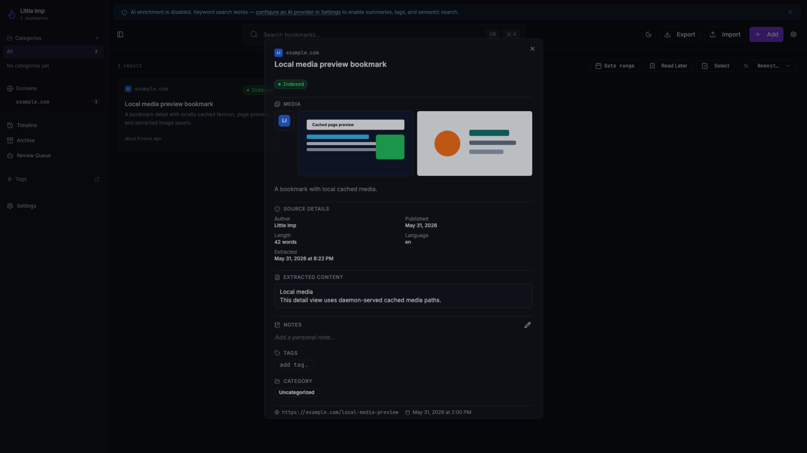
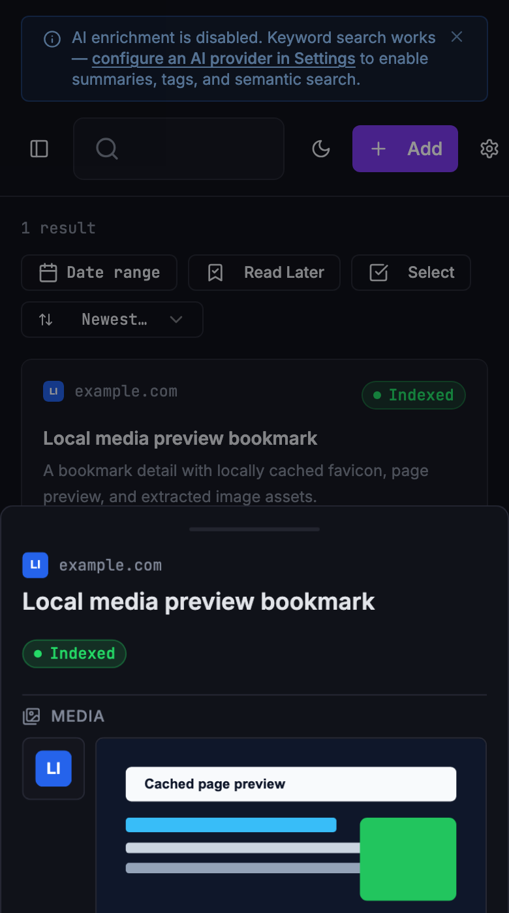

Grimoire Task Report
Bookmark Media Handling And Preview

Before
Bookmark rows already had favicon and screenshot fields, but the pipeline did not populate local media cache records and the UI fell back to a remote Google favicon service.
Problem
Media previews needed to respect Little Imp's local-first posture: no browser hotlinking, explicit cache limits, safe public-only media fetches, and graceful handling when cache files are missing after restore.
Changes Added
- Added `bookmark_media` metadata, bounded cache files under `media-cache/`, and daemon serving at `/media/bookmarks/:bookmarkId/:mediaId`.
- Extracted favicon, page-preview, and article-image candidates during ingestion, with redirect, private-host, non-SVG image, duplicate-final-URL, count, per-file, and total-cache limits.
- Added bookmark detail media data to the API contract and frontend rendering with local fallback favicons and missing-file hide behavior.
Result
Bookmark details now show available cached favicon, page preview, and extracted images from the local daemon. Normal backups keep media files out of the portable payload, and permanent delete purges cache files for the deleted bookmark.
Verification
bun test src/test/bookmark-media.test.tsnpm run test -- src/hooks/use-bookmarks.test.ts src/components/BookmarkDetailContent.test.tsx src/components/BookmarkDetail.test.tsxbun run checkin `daemon/`npm run type-check:frontendnpm run docs:apiand screenshot pass against daemon-served frontendnpm run check,npm run test:e2e, andgit diff --checkafter review hardening
Additional Screenshots

Files Changed
daemon/src/media/bookmark-media.tsdaemon/src/routes/media.tsdaemon/src/db/migrations/0014_bookmark_media.sqldaemon/src/pipeline/pipeline.tssrc/components/BookmarkDetailContent.tsxsrc/lib/media-url.ts